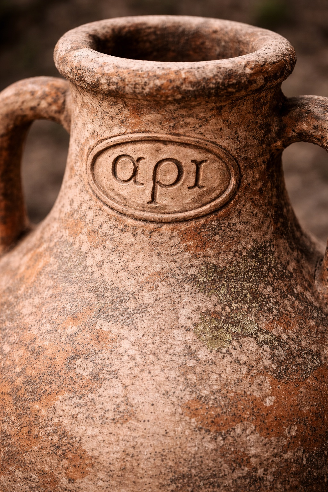
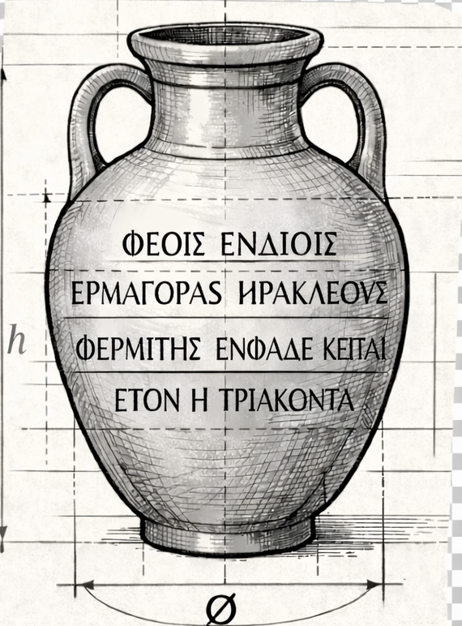

PIATTAFORMA DIGITALE DI RICERCA E PUBLIC EPIGRAPHY
Un portale per leggere insieme epigrafi, contesti e territorio.
Words In Context è un ambiente digitale in corso di sviluppo dedicato alle epigrafi preromane di Puglia. Il progetto mette in relazione testi, supporti materiali, dati spaziali e risorse in una forma accessibile a pubblici diversi: da chi si avvicina per la prima volta a questo patrimonio a chi cerca strumenti di consultazione specialistica.
La piattaforma nasce con una doppia vocazione. Da un lato propone un accesso immediato, orientato all’esplorazione guidata e alla valorizzazione del patrimonio culturale; dall’altro organizza metadati, cronologie, distribuzioni geografiche e livelli di descrizione utili per l’analisi avanzata. L’obiettivo è costruire un sistema leggero, aperto e progressivamente estendibile, capace di integrare nel tempo nuove risorse come modelli 3D, percorsi narrativi e livelli di interrogazione più fini sul testo epigrafico.
Esplorazione guidata
Una lettura introduttiva per orientarsi tra luoghi, cronologie, lingue e tipologie di materiali.
Consultazione avanzata
Filtri, schede e strumenti per seguire relazioni tra dati, testi e supporti.
Patrimonio connesso
Un ambiente pensato per tenere insieme oggetto, iscrizione, contesto e futuri sviluppi 3D.
Timeline semplificata
Le fasi cronologiche si leggono come un percorso ramificato.
Ogni diramazione rappresenta l’avvio di una fase diversa. La sua lunghezza e il suo spessore restituiscono in modo sintetico il peso relativo dei record ricadenti in quel segmento cronologico.
Inquadramento geografico
Un primo sguardo alla distribuzione territoriale del corpus.
La mappa non mostra soltanto punti: restituisce relazioni tra luoghi, cronologie, lingue e supporti. Questo rende possibile confrontare aree diverse e individuare concentrazioni, assenze e percorsi di diffusione.
Lingue e popoli
Greco e messapico sono letti in parallelo, senza perdere le rispettive specificità.
Il portale mette in dialogo due tradizioni scrittorie e culturali dell’Italia meridionale preromana. La loro co-presenza aiuta a osservare somiglianze, differenze, contesti di uso e distribuzioni territoriali su scala regionale.
Greco
--
Una lingua di cui conosciamo la grammatica e tutti i suoi aspetti fonologici, morfologici, sintattici e semantici.
Messapico
--
Una lingua frammentaria della quale disponiamo di una ricostruzione fonologica non sempre sicura, di una morfologia talvolta frammentata e di una sintassi e semantica lacunose ed in costante studio.
Supporto e testo
Due livelli distinti, da analizzare separatamente e ricomporre nella consultazione.
Un’iscrizione è contemporaneamente oggetto materiale e contenuto testuale. Per questo la piattaforma distingue il supporto epigrafico dal testo, ma li tiene connessi nella navigazione e nella scheda di dettaglio.

Il supporto epigrafico
Materiale, forma, stato di conservazione, contesto archeologico, luogo di rinvenimento e caratteristiche fisiche dell’oggetto.
Pagina di dettaglio in preparazione
Il testo
Trascrizione, marcatura, traduzione e futuri livelli di interrogazione semantica per leggere l’iscrizione come contenuto strutturato.
Pagina di dettaglio in preparazione